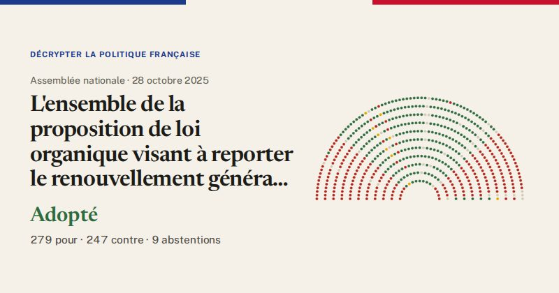

Assemblée nationale · scrutin n°3182 · 28 octobre 2025
L'ensemble de la proposition de loi organique visant à reporter le renouvellement général des membres du congrès et des assemblées de province de la Nouvelle-Calédonie afin de permettre la poursuite de la discussion en vue d'un accord consensuel sur l'avenir institutionnel de la Nouvelle-Calédonie (texte de la commission mixte paritaire).
Adopté
279pour
247contre
9abstentions

Le vote de chaque groupe
| Groupe | Pour | Contre | Abst. | Membres |
|---|---|---|---|---|
| LFI-NFP | 0 | 66 | 0 | 71 |
| GDR (communistes) | 0 | 17 | 0 | 17 |
| Écologiste et Social | 1 | 35 | 0 | 38 |
| Socialistes | 56 | 4 | 6 | 69 |
| LIOT | 13 | 6 | 2 | 22 |
| Ensemble pour la République | 82 | 0 | 0 | 92 |
| Démocrate (MoDem) | 34 | 1 | 0 | 36 |
| Horizons | 32 | 0 | 0 | 34 |
| Droite Républicaine | 43 | 0 | 0 | 50 |
| UDR | 13 | 0 | 0 | 16 |
| Rassemblement National | 0 | 116 | 0 | 123 |
| Non-inscrits | 5 | 2 | 1 | 9 |